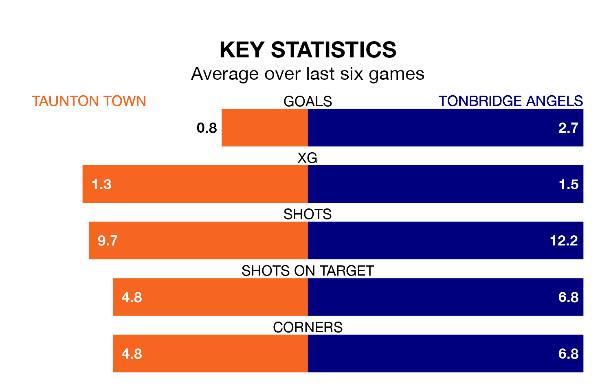

Taunton Town host Tonbridge Angels in Saturday's match at the Cygnet Health Care Stadium looking to bounce back from defeat last time out in National League North and South.
Taunton, who sit zero in the league after 19 games, fell to a 3-0 away defeat to Havant and Waterlooville on December 16.
They face a Tonbridge Angels side who picked up a win in their last match, a 4-0 victory against Dartford, and who sit 17th in the table.
With 35 goals in 23 games so far this season, Tonbridge Angels are scoring more than average in the league with 1.5 goals per game. And they are conceding fewer than average, letting in 30 goals at a rate of 1.3 per game.
Taunton, meanwhile, are below average scorers, with 1.3 goals per game, compared to a league average of 1.4. They have also conceded 1.3 goals per game.
Town are in disappointing form in National League North and South, with one win and two draws from their last six games.
With four wins and a draw over that period, the away side's form is much better – they have taken 13 points from 18, compared to the hosts' five.
Over the last year, Taunton and Tonbridge Angels have played each other twice. Taunton won both of them.
Their last meeting was on September 9, when Taunton won 3-0 away.
Updated: 12:43, 20/12/23